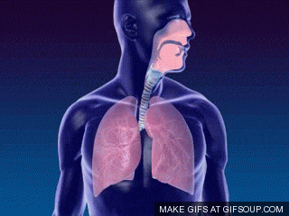

El sistema respiratorio es el conjunto de órganos encargados de intercambiar gases con el medio ambiente. Su función principal es incorporar oxígeno a la sangre para que llegue a las células, y expulsar dióxido de carbono (un gas de desecho del metabolismo) mediante la exhalación.
